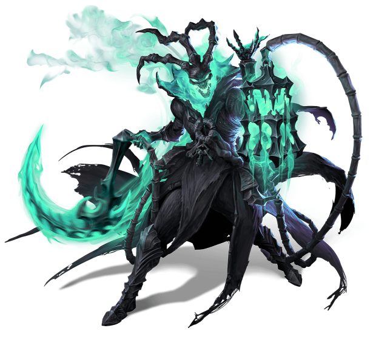
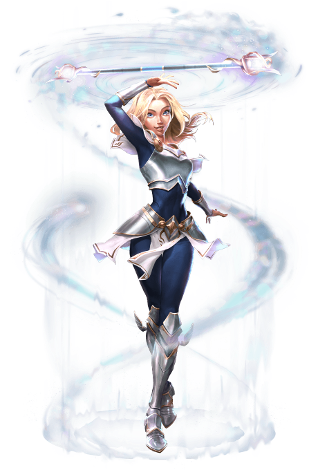
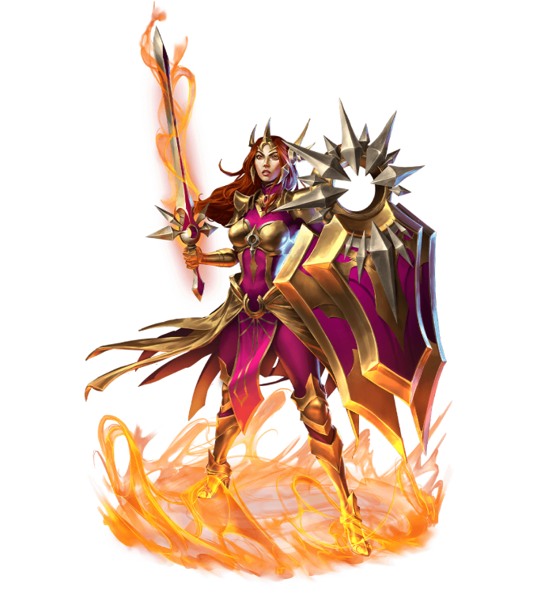

Jogue como nunca, perca como sempre.
Aqui você encontrara as melhores dicas e builds das melhores fontes da humanidade humana que são as vozes da minha cabeça. Também aprendera as histórias dos personagens e irá descobrir como um dragão maior que a galáxia apanha pra um rato com canudo.


Campeões.
Aqui vc encontrara tudo sobre a gata carrapateira, o palhaço psicótico, a xerife cola velcro, o yordle cabeçudo, senna (não o piloto) e o teemo, que foi criado pelo próprio tio Luci.
VER MAISBuilds variadas.
Aqui voce encontra as builds mais divertidas. NÃO são as melhores pois nao existe no mundo uma build que ajude na sua gameplay mediocre. E se não tem como ganhar, então pelo menos se divirta perdendo.
VER BUILDS
